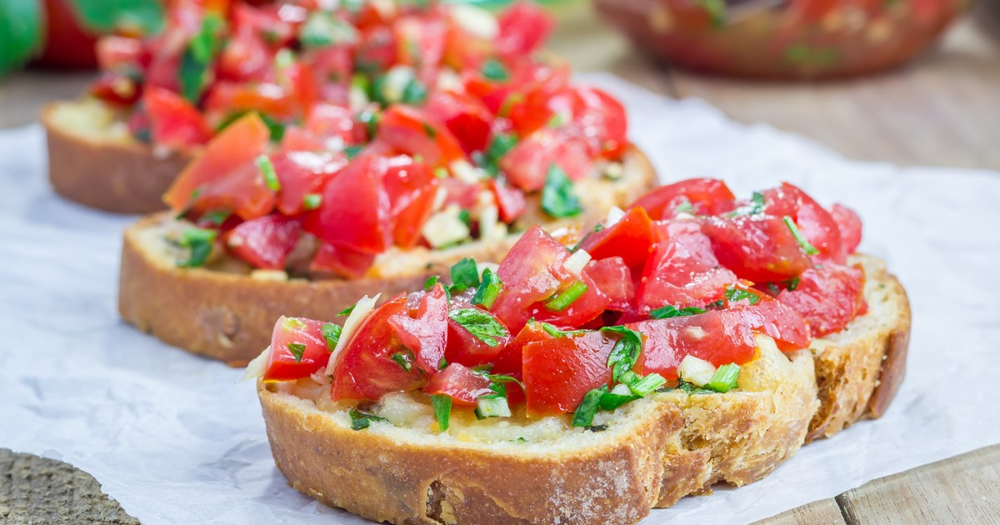

Platos Principales

Pasta
Ingredientes
- 300 gramos de harina
- Huevos
- 1 pizca de sal
- Salsa de tomate
Preparación
Mezclar todos los ingredientes, amasar y cocinar en agua hirviendo. Agregar salsa y servir.

Cortar los tomates y mezclarlos con ajo y aceite. Colocar sobre el pan tostado y servir.
Mezclar todos los ingredientes, amasar y cocinar en agua hirviendo. Agregar salsa y servir.

Mezclar todos los ingredientes, colocar en un molde y hornear durante 30 minutos.